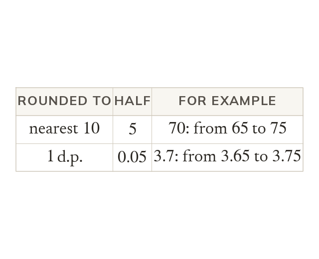
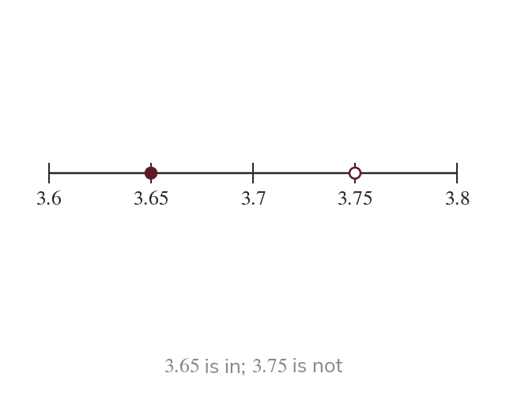
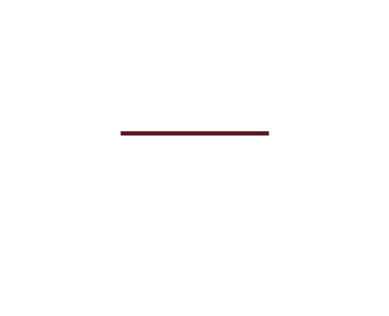
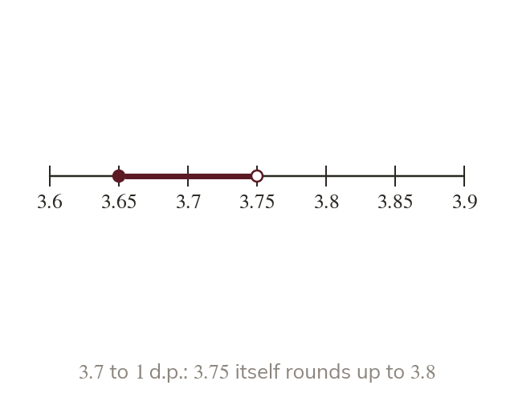

A rounded value is an interval
A rounded value stands for every value that rounds to it. The bounds lie half a rounding unit either side.
A length given as cm to the nearest centimetre could really be anything from cm up to, but not including, cm. Today pins down exactly where the true value can lie.
Work down the page at your own pace. Write every answer in your book first, then click to check it.
Read each card, then follow the worked examples one step at a time.
A rounded value stands for every value that rounds to it. The bounds lie half a rounding unit either side.

The rounding unit sets the half. To the nearest it is and to decimal place it is
Pick an answer. If it's wrong, the feedback tells you which mistake it was.
Read each card, then follow the worked examples one step at a time.


The error interval is written lower bound ≤ < upper bound. The lower bound is included and the upper bound is not.

The upper bound itself rounds up to the next value. So x never equals the upper bound.
Pick an answer. If it's wrong, the feedback tells you which mistake it was.
Finished? Next lesson: 9.10.1 Speed and Density.
For each skill, tap the one that is true for you today. Your Revise pages start with anything you mark Not yet.
Your ratings are saved on this device only.
Log in, then search for a code to practise that skill.
Videos, worksheets and more on each part of this lesson.